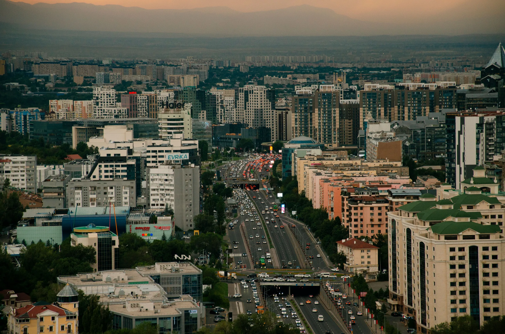

Автомобильный гид IFA
Urban road guide · Kazakhstan
KAZAKHSTAN:THE GREAT JOURNEY
Премиальный автомобильный гид по современному Казахстану
Проект для автопутешественников о Казахстане XXI века: современной архитектуре, культуре, инфраструктуре, региональном разнообразии и преобразованиях национального масштаба.
IFA / 2026Современный Казахстан · Общенациональный масштаб
Project concept
Современный Казахстан, который открывается с дороги
Издание раскрывает современный Казахстан в общенациональном масштабе — через архитектуру, культурное наследие, новые общественные пространства, инфраструктуру, региональную идентичность и темп преобразований. Проект объединяет визуальное исследование страны с логикой автомобильного путешествия, формируя цельный международный образ ведущего государства Центральной Азии.
National editorial network
Национальная редакционная сеть проекта
Концепция предусматривает рабочее взаимодействие с государственными и региональными структурами, культурными институциями, сетью туристских информационных центров и экспертами в сфере туризма.
Наименование конкретной организации и её роль размещаются в проекте только после документального подтверждения участия.
Project pipeline
Этапы реализации
Проект проходит последовательный цикл — от исследования территорий и культурных объектов до подготовки автомобильного гида к выпуску.
Исследование
Отбор территорий, архитектуры, объектов наследия и культурных пространств.
Сбор материалов
Региональные данные, архивы и предварительные визуальные материалы.
Региональная проверка
Уточнение доступа, инфраструктуры, сезонности и актуальности информации.
Маршрутная работа
Связь территорий, логика передвижения и последовательность ключевых точек.
Фотосъёмка
Единый визуальный стандарт для архитектуры, культуры, среды и маршрутов.
Редакционная подготовка
Тексты, карты, практические данные и фактологическая проверка.
Дизайн издания
Макет, типографика, цвет, материалы и производственный прототип.
Выпуск национального гида
Подготовка финального издания и международной презентации современного Казахстана.
Project cooperation
Присоединиться к созданию международного гида по современному Казахстану
IFA открыта к предметному диалогу с государственными и региональными структурами, культурными организациями, туристскими информационными центрами и профессиональными командами, способными усилить маршрутный, визуальный или издательский контур проекта.